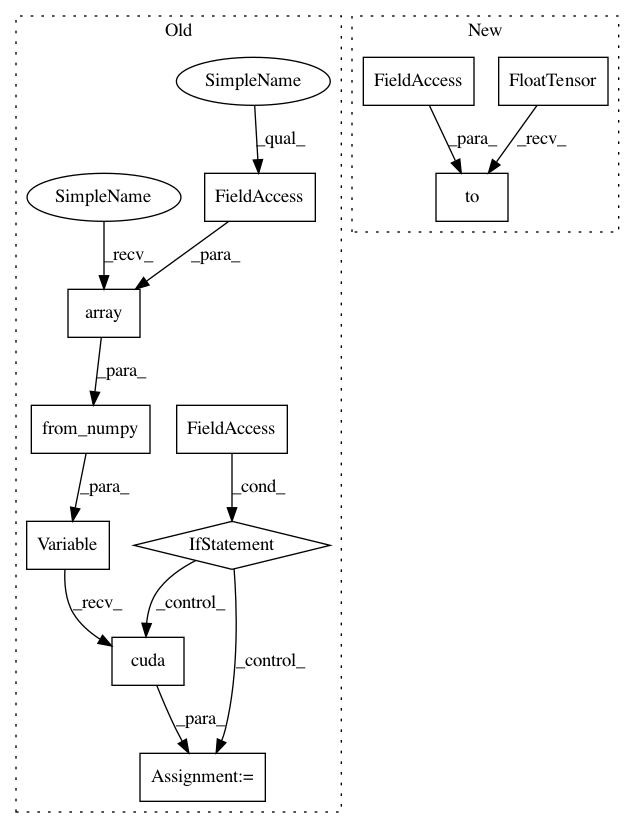

d5b0cd8e7960c247bb7c5b7c832358f8831780fb,ch15/03_train_trpo.py,,,#,90
Before Change
traj_states = [t[0].state for t in trajectory]
traj_actions = [t[0].action for t in trajectory]
traj_states_v = Variable(torch.from_numpy(np.array(traj_states, dtype=np.float32)))
traj_actions_v = Variable(torch.from_numpy(np.array(traj_actions, dtype=np.float32)))
if args.cuda:
traj_states_v = traj_states_v.cuda()
traj_actions_v = traj_actions_v.cuda()
traj_adv_v, traj_ref_v = calc_adv_ref(trajectory, net_crt, traj_states_v, cuda=args.cuda)
mu_v = net_act(traj_states_v)
old_logprob_v = calc_logprob(mu_v, net_act.logstd, traj_actions_v)
After Change
traj_states = [t[0].state for t in trajectory]
traj_actions = [t[0].action for t in trajectory]
traj_states_v = torch.FloatTensor(traj_states).to(device)
traj_actions_v = torch.FloatTensor(traj_actions).to(device)
traj_adv_v, traj_ref_v = calc_adv_ref(trajectory, net_crt, traj_states_v, device=device)
mu_v = net_act(traj_states_v)
old_logprob_v = calc_logprob(mu_v, net_act.logstd, traj_actions_v)
In pattern: SUPERPATTERN
Frequency: 4
Non-data size: 11
Instances
Project Name: PacktPublishing/Deep-Reinforcement-Learning-Hands-On
Commit Name: d5b0cd8e7960c247bb7c5b7c832358f8831780fb
Time: 2018-04-29
Author: max.lapan@gmail.com
File Name: ch15/03_train_trpo.py
Class Name:
Method Name:
Project Name: PacktPublishing/Deep-Reinforcement-Learning-Hands-On
Commit Name: d5b0cd8e7960c247bb7c5b7c832358f8831780fb
Time: 2018-04-29
Author: max.lapan@gmail.com
File Name: ch15/lib/common.py
Class Name:
Method Name: unpack_batch_a2c
Project Name: PacktPublishing/Deep-Reinforcement-Learning-Hands-On
Commit Name: 373ae159f7ae1cabaf87228d1ae0fb6acd1c6363
Time: 2018-04-29
Author: max.lapan@gmail.com
File Name: ch14/lib/common.py
Class Name:
Method Name: unpack_batch_a2c
Project Name: PacktPublishing/Deep-Reinforcement-Learning-Hands-On
Commit Name: d5b0cd8e7960c247bb7c5b7c832358f8831780fb
Time: 2018-04-29
Author: max.lapan@gmail.com
File Name: ch15/03_train_trpo.py
Class Name:
Method Name:
Project Name: PacktPublishing/Deep-Reinforcement-Learning-Hands-On
Commit Name: 656933c471e64ad697be749b98cea93a758ac5cb
Time: 2018-04-29
Author: max.lapan@gmail.com
File Name: ch16/05_cheetah_ga_batch.py
Class Name:
Method Name: evaluate_batch